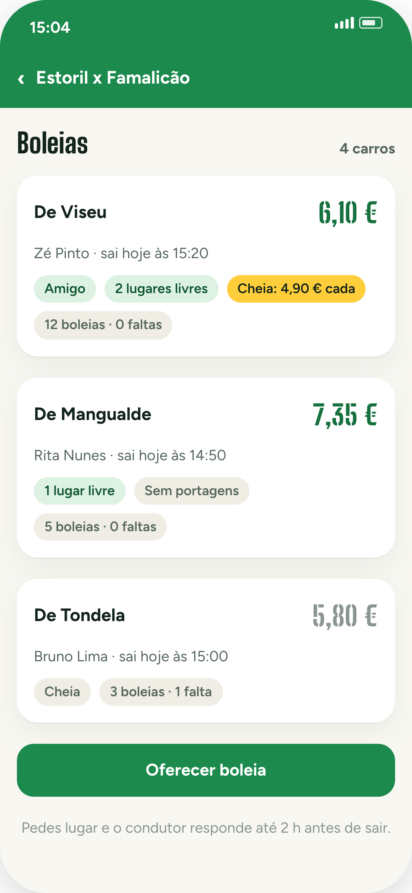
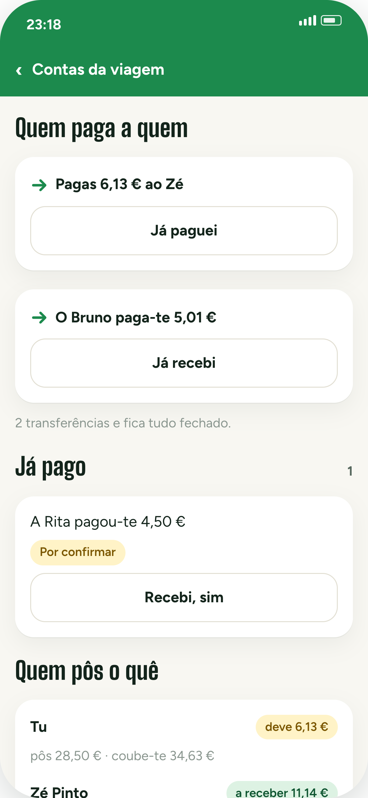
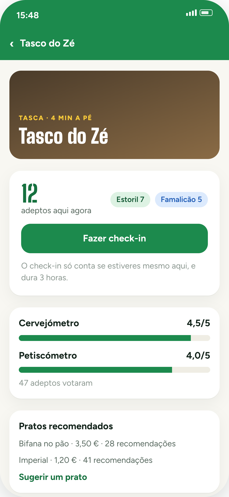
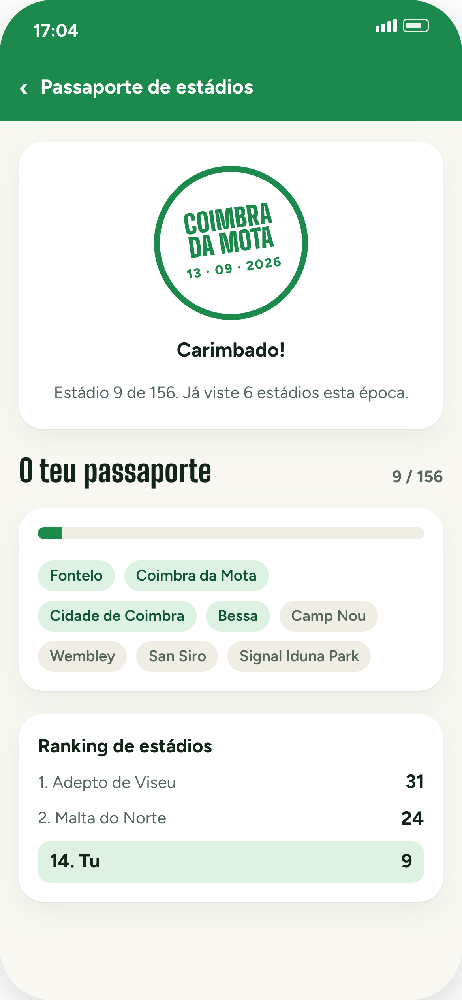
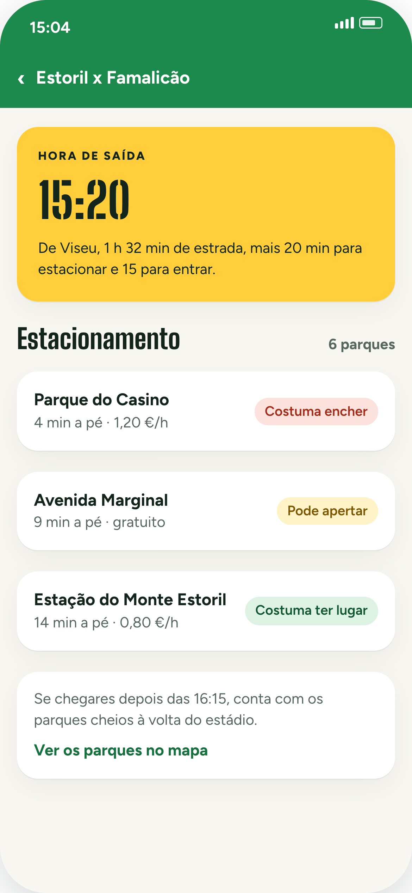
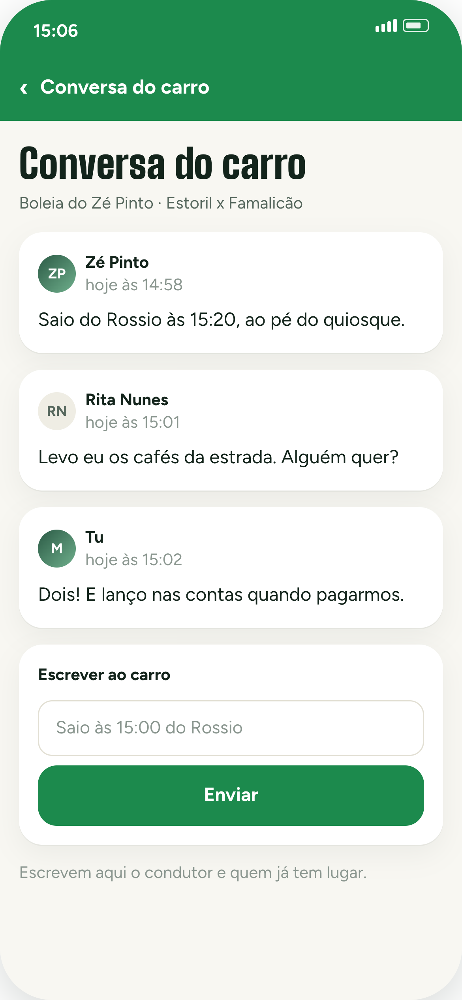
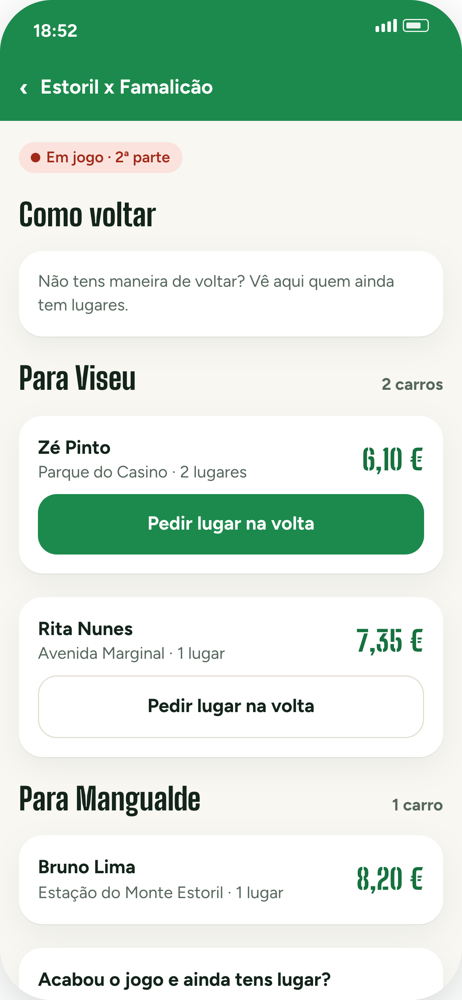
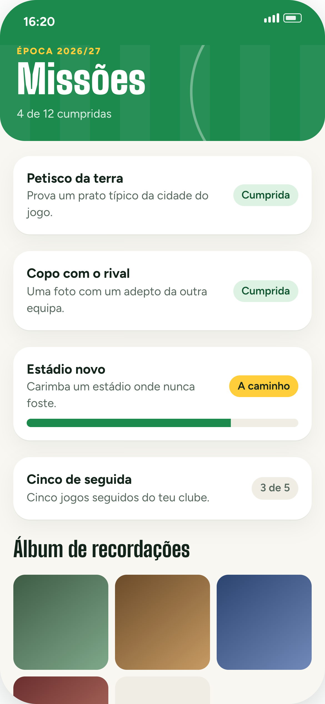

Boleias
«Alguém vai de carro?»
Agora tem resposta.
E o preço não sai do achómetro: sai do consumo, do combustível e das portagens do caminho.
Custo a sério
6,10 € por pessoa. Baixa sozinho quando entra mais gente.
Folha corrida
12 boleias, 0 faltas. Sabes com quem entras no carro.
Amigos primeiro
O carro de quem já foi contigo aparece à frente.

o dia inteiro, não só os 90 minutos
Contas da viagem
«Depois acertamos.»
A frase mais cara
do futebol.
Passados três dias ninguém sabe quem pagou o jantar. A app sabe.
Divide quem entra
Nem todos beberam. Escolhes quem entra em cada despesa.
Ao cêntimo
10,01 € por três dá 3,34 € e dois de 3,33 €. E tem dono.
Quem paga a quem
Duas transferências e está tudo fechado.

a app não move dinheiro — só diz quem paga a quem
Antes do jogo
Chegar cedo tem
um único objetivo.
Os tascos à volta do estádio, avaliados por quem lá foi — e o contador de quem já lá está.
Cervejómetro
4,5 em 5, votado por 47 adeptos. Não é opinião de guia.
Já lá estão 12
Só aparece a partir de 5 pessoas. A tua localização não fica guardada.
Petiscos com nome
Bifana a 3,50 €, 28 recomendações. Sabes ao que vais.

1501 sítios à volta dos estádios
Passaporte de estádios
Dizes que já foste
a 30 estádios.
Prova.
O carimbo só se dá lá dentro, no dia do jogo. É a app que confirma.
156 estádios
Dos 57 nacionais ao Camp Nou, Wembley e San Siro.
Sem batota
Fora do estádio não carimba. No dia seguinte, também não.
Ranking público
Quem tem mais estádios na perna aparece na lista.

o passaporte de quem anda na estrada
Dia de jogo
Sair «às três e tal»
é como não sair.
A app diz-te a hora, conta com o trânsito do jogo e com o tempo de encontrar lugar.
15:20
Estrada, estacionamento e a fila da entrada, já contados.
Parques por cor
Verde costuma ter lugar. Vermelho, se chegares tarde, esquece.
A pé do carro
4, 9 ou 14 minutos até à bancada. Escolhes tu.

chega a horas, sem dar voltas ao quarteirão
Conversa do carro
Um grupo de
WhatsApp a menos.
A conversa é do carro: condutor e quem já tem lugar. Acaba um dia depois do jogo e não volta a tocar.
Só quem vai
Quem ainda não foi aceite não escreve. O carro não é um grupo aberto.
Combina-se ali
A hora certa, o sítio, quem leva os cafés.
E cala-se sozinha
Um dia depois do jogo fecha. Fica lá para consulta.

o que se combina, combina-se uma vez
Depois do apito
O jogo acabou.
E agora, quem
é que te leva?
Com o apito, as boleias mudam de cara: mostram quem volta e para onde.
Por destino
«Para Viseu», «para Mangualde». Não é uma lista de nomes soltos.
Sobra um lugar?
Abre-o a meio do jogo. Alguém lá fora agradece.
Sem ficar a pé
Pedes lugar na volta e o condutor responde no telemóvel.

ninguém fica no parque à espera de um milagre
Missões
O jogo dura
90 minutos.
O dia, não.
Missões para cumprir na viagem, e um álbum que no fim da época conta a história toda.
Petisco da terra
Provar o prato da cidade do jogo. É trabalho, mas alguém tem de o fazer.
Copo com o rival
Uma foto com um adepto da outra equipa. Sem sangue.
Álbum da época
As fotos ficam. A memória, essa, é que se vai.
